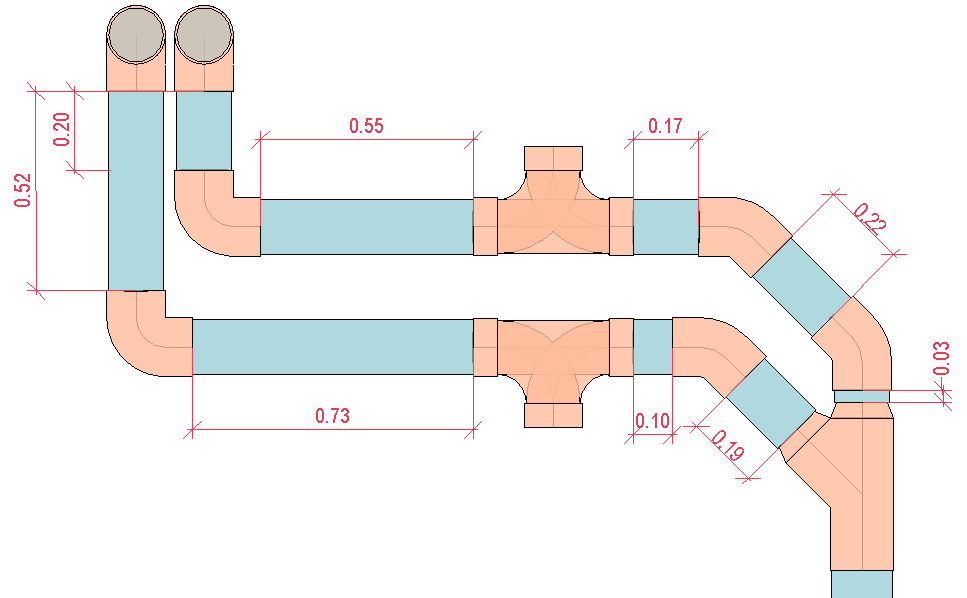

Measure the length of pipes in meters or feet and fittings in count of units, as shown in Figure 13, individualizing them based on their own characteristics.
 Figure 13 - Pipes Length and Fittings Count Method.
This measurement approach provides a more accurate and detailed quantity of these elements.
Applicability: Therefore, it is more frequently observed not only in more advanced project phases, but also for manufacturing and construction phases.